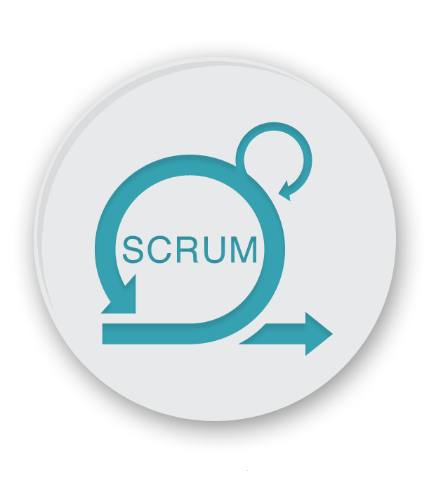

Perform Near Real-time Analytics on Streaming Data with Amazon Kinesis and Amazon Elasticsearch Service

April 2021
Hi ,
This is just demo of my project where
Nowadays, streaming data is seen and used everywhere—from social networks, to mobile and web applications, IoT devices, instrumentation in data centers, and many other sources. As the speed and volume of this type of data increases, the need to perform data analysis in real time with machine learning algorithms and extract a deeper understanding from the data becomes ever more important. For example, you might want a continuous monitoring system to detect sentiment changes in a social media feed so that you can react to the sentiment in near real time.
Use Spark features for data analysis to derive valuable insights using AWS Service and MongoDB Cloud

April 2021
Hi ,
This is just demo of my project where
Use Spark features for data analysis to derive valuable insights.
Perform Near Real-time Analytics Using Hue
April 2021
Hi ,
This is just demo of my project where
The HR team is surfing social media to gather current and ex-employee feedback or sentiments.
This information gathered will be used to derive actionable insights and take corrective actions to
improve the employer-employee relationship. The data is web-scraped from Glassdoor and
contains detailed reviews of 67K employees from Google, Amazon, Facebook, Apple, Microsoft,
and Netflix.
Perform Near Real-time Analytics Using MongoDB
April 2021
Hi ,
This is just demo of my project where
MongoDB—NoSQL Document Store—Call Data Operation and Analysis in Sharded Environment.
Azure Web App Bot
Jun 2020
This Azure Chat Bot is just for testing purpose .
1. Created the QnA maker workspace and lined to the subscription.
2.Create the Bot by using services Azure Web App Bot (AI+ML)
3.Deploy the code in Github repo
4.Publish the Webapp using CI/CD
5.And then linked the Web App Bot to the channel called Telegram(Mobile/Desktop version)
Above are for testing purpose .
Dockerizing Jenkins Pipeline
Sep 2019
Hi,
This is a just project demo
which is worked for testing and
you can view the codes sample in github repo.
I have used the differnt scenario and
testing phase to build the image and
push it into dockerhub using CI/CD
pipeline and then run that image in a container .
Pushing software and updates using ansible controller
Sep 2019
Hi ,
This is just demo of my project where
i used to push or update any software from ansible controller to
node machine.
Just need to write the effective code using python and yaml language.
Agile Scrum Master(ASM®) Project - Smart Weather

Aug 2019
Hi,
This project is associated with the ASM certification where i have worked on smart weather project .In this project i have used the scrum module on jira software.
Due to permission you can just able to view my work but not able to get into Atlassian website.